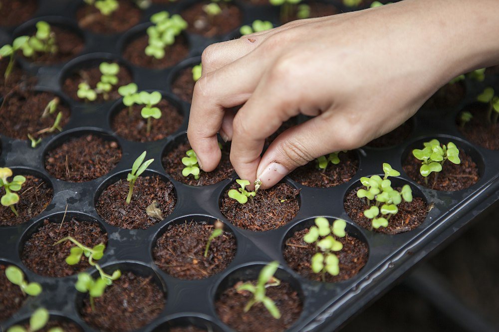

Agronomic Excellence
Best Practices for Healthy Plant Growth & Soil Vitality
Maximizing harvest abundance requires correct compost blending, moisture maintenance, and biological synchronization. Follow these essential farm practices.

1. Compost Blending & Soil Integration
Always incorporate aged manure and vermicompost into the top 4 to 6 inches of soil where aerobic rhizosphere bacteria thrive. Avoid burying compost in deep anaerobic layers.
- Moisture Level: Maintain 40–50% soil moisture (sponge dampness) after application to activate beneficial microflora.
- Pre-Planting Rest: Allow soil to rest 7 to 10 days after basal cow manure mixing before sowing seeds.
- Mulching Synergy: Cover treated soil with straw or dry leaves to protect live earthworms from harsh direct sunlight.

2. Sustained Feeding & Root Zone Aeration
Continuous crop growth depends on staggered split-applications rather than a single heavy fertilization dose. Providing steady organic carbon prevents nutrient leaching during seasonal monsoons.
- Root Zone Furrowing: Apply neem cake and bone meal in a circular trench along the tree drip line, not against trunk bark.
- Irrigation Timing: Water lightly immediately after top-dressing vermicompost to dissolve humates into feeder roots.
- Storage Integrity: Store bulk bags in a cool, covered, ventilated warehouse away from direct rain and ground seepage.